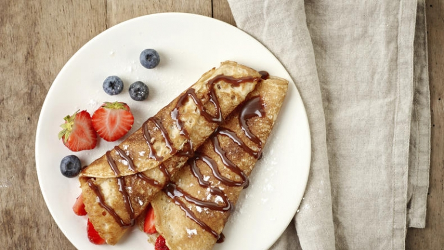

Tenké domácí palačinky

Ingredience
- 500 ml polotučného mléka
- 2 vejce
- 200 g hladké mouky
- Špetka soli
- 1 vanilkový cukr
- Olej nebo máslo na smažení
Postup přípravy
- Těsto: V mléce rozšlehejte vejce, sůl a cukr. Postupně zašlehávejte mouku, aby nevznikly hrudky.
- Odpočinek: Nechte těsto alespoň 15 minut odstát v lednici.
- Smažení: Rozpalte pánev s kapkou oleje. Nalijte naběračku těsta, rozlijte do krajů a smažte z obou stran dozlatova.
- Servírování: Pomažte marmeládou, tvarohem nebo Nutellou a srolujte.